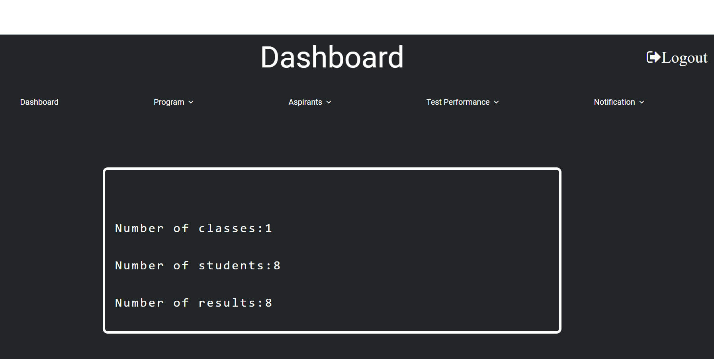
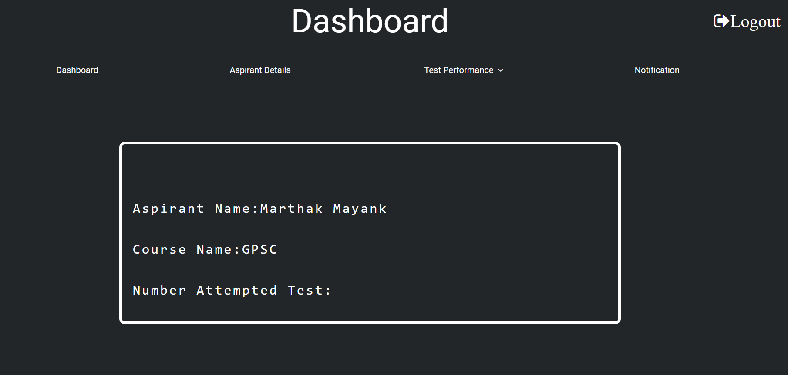

Web Application

Our Test Series Performance (TSP) project endeavors to address the complex challenges encountered by out-of-area students in engaging with online educational platforms and participating effectively in test series assessments. In today's rapidly evolving educational landscape, online test series have emerged as indispensable tools for evaluating and enhancing students' academic performance
Home Page
Admin Side

User Side
